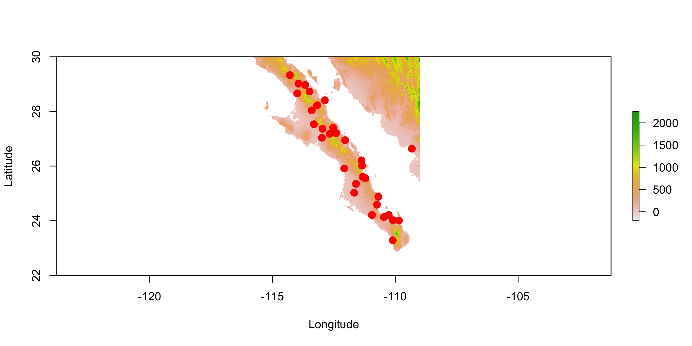
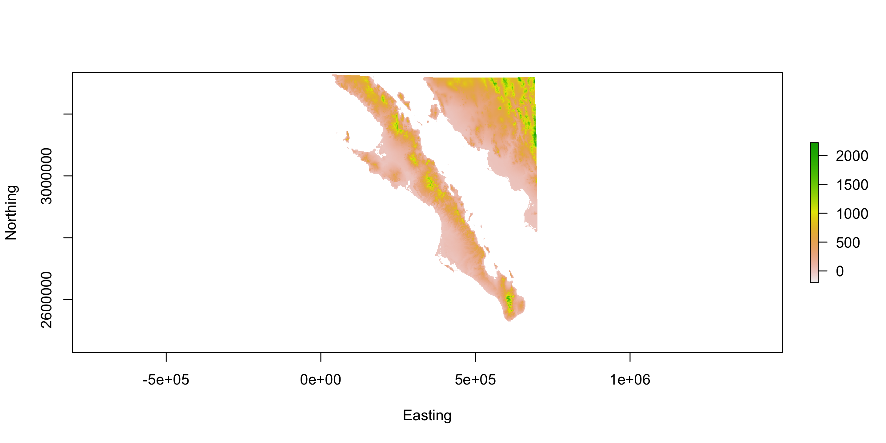
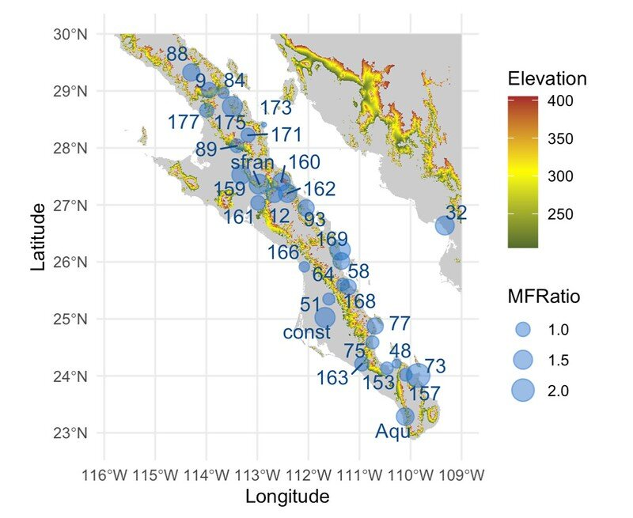

[1] 12 15 11 14 15 12 12 20 12 9 9 10 11 10 12 13 6 15 14 14 20 16 23 8 14
[26] 10 13 10 14 12 6 15 10 7 10 9Raster Data
Rodney Dyer, PhD
Rasters
Examples:
- Elevation (continuous)
- Habitat Type (discrete)
- Precipitation (continuous)
- Impervious Surfaces (discrete)
What is the Structure of a Raster?
A Raster is simply a matrix of values with some additional decorations on it that allow it to have a spatial context.
Spatial Designations
For each value in the matrix, when it is turned into a raster object:
The
cell(pixel) has a defined spatial extent (width, height, & origin).All the physical space represented by that cell has exactly the same value
The courseness of the raster is question dependent:
3x5 matrix for Continental US may not adequately capture elevation trends.
1m2 matrix for elevation may be a bit too big.
Matrix \(\to\) Raster
Matrix \(\to\) Raster
Notice that when I plot it out, it does not show the data, but a summary of the data along with some key data about the contents, including:
- A class definition
- The dimensions of the underlying data matrix,
- The resolution (e.g., the spatial extent of the sides of each pixel). Since we have no CRS here, it is equal to \(nrows(x)^{-1}\) and \(ncols(x)^{-1}\).
- The extent (the bounding box) and again since we do not have a CRS defined it just goes from \(0\) to \(1\).
- The
crs(missing) - The source can be either
memoryif the raster is not that big orout of memoryif it is just referencing.
Loading A Raster
By far, you will most commonly working with pre-existing raster data.
- Several file formats including GeoTIFF, BIL, & ASC.
- All can be loaded from filesystem or internet with address.
Loading A Raster - Example
class : RasterLayer
dimensions : 3600, 3600, 12960000 (nrow, ncol, ncell)
resolution : 0.008333333, 0.008333333 (x, y)
extent : -120, -90, 4.163336e-16, 30 (xmin, xmax, ymin, ymax)
crs : +proj=longlat +datum=WGS84 +no_defs
source : alt_22.tif
names : alt_22
values : -202, 5469 (min, max)Notice that this raster has a defined CRS and as such it is projected and the extent relates to the units of the datum (e.g., from -120 to -90 degrees longitude and 0 to 30 degrees latitude).
Visualizing Rasters
Built-in Plotting
Just like all things in R, raster objects can be visualized using built-in functions as well as functions from external libraries.
Raster Sizes
This particular raster is quite large (in terms of the number of cells)
class : RasterLayer
dimensions : 3600, 3600, 12960000 (nrow, ncol, ncell)
resolution : 0.008333333, 0.008333333 (x, y)
extent : -120, -90, 4.163336e-16, 30 (xmin, xmax, ymin, ymax)
crs : +proj=longlat +datum=WGS84 +no_defs
source : alt_22.tif
names : alt_22
values : -202, 5469 (min, max)These data only represent the elevation of the land. Where there is water, the value in the underlying matrix is NA.
| Cell Type | Count |
|---|---|
| Land | 2,469,350 |
| Water | 10,490,650 |
Cropping
One of the first things to do is to crop the data down to represent the size and extent of our study area. If we over 10 million missing data points (the ocean) and most of Mexico in this raster above but we are only working with sites in Baja California (Norte y Sur), we would do well to excise (or crop) the raster to only include the area we are interested in working with.
Cropping Workflow:
- Define a bounding box (the spatial extent of the region of interest)
- Expand it a bit so that points are not on the edges of the box.
- Create an
extent - Crop the original matrix to represent the boundaries defined in the
extent
Cropping 1: Bounding Box
Let’s use the beetle data from the Spatial Points Lecture as the data we will be working with.
xmin ymin xmax ymax
-114.29353 23.28550 -109.32700 29.32541 Cropping 2: Expand the Bounding Box
Option 1: Eyeball it!
Maybe rounding it to:
Cropping 3: Define the Extent
I’ll just use the old eyeball test to make the numbers ‘round’.
Cropping 4: Cropping
To crop the raster, we use the crop() function and it makes a new raster (and I can throw the old big one away).
class : RasterLayer
dimensions : 960, 840, 806400 (nrow, ncol, ncell)
resolution : 0.008333333, 0.008333333 (x, y)
extent : -116, -109, 22, 30 (xmin, xmax, ymin, ymax)
crs : +proj=longlat +datum=WGS84 +no_defs
source : memory
names : alt_22
values : -202, 2263 (min, max)
Notice the add=TRUE adds to the previous plot, and (2) Need to run whole chunk to see built-in plot overlays.
Cropping vs Masking
Masking is similar to cropping but with one main distinction. When you mask a raster, you do not reduce the size of it, you only allocate missing data to the part you are not interested in working with.
Plotting Rasters with ggplot
As you probably guessed, there is a geom_raster() available to us. .redinline[However], we need to conver the data from a raster (matrix) to a data.frame object that ggplot can read.
Converting A raster to a data.frame
A little coercion to move matrix into as.data.frame() is necessary. I also use the transmute() function which does in-place renaming (rather than mutate( X=y ) %>% select( -y ))
Longitude Latitude Elevation
1 -115.7958 29.99583 55
2 -115.7875 29.99583 126
3 -115.7792 29.99583 94
4 -115.7708 29.99583 99
5 -115.7625 29.99583 106
6 -115.7542 29.99583 120geom_raster()
Playing with Colors
Custome Color Gradients
Overlay Data
Raster Manipulations
Map Interactivity
You can work with raster data interactively (I just cannot do it here on this presentation because it has to be in real time).
Points from click()
Here are what the points look like.
Reprojecting Rasters
Just like points, we can reproject the entire raster using the projectRaster function. Here I am going to project the raster into UTM Zone 12N, a common projection for this part of Mexico from epsg.io.
Unfortunately, the raster library does not use epsg codes so we’ll have to use the large description of that projection. See the page for this projection and scroll down to the proj.4 definition.
Visualizing
class : RasterLayer
dimensions : 981, 879, 862299 (nrow, ncol, ncell)
resolution : 834, 923 (x, y)
extent : -21583.09, 711502.9, 2428482, 3333945 (xmin, xmax, ymin, ymax)
crs : +proj=utm +zone=12 +ellps=GRS80 +towgs84=0,0,0,0,0,0,0 +units=m +no_defs
source : memory
names : alt_22
values : -202, 2222.994 (min, max)
Extracting Data From Rasters
What are the parts of Baja California that are within 100m of the elevation of site named San Francisquito (
sfran)?
To answer this, we have the following general outline of operations.
- Find the coordinates of the site named
sfran
- Extract the elevation from the
altraster that is within 100m (+/-) of that site. - Plot the whole baja data as a background
- Overlay all the locations within that elevation band.
To do this we will use both the alt and the beetles data objects.
Isolating the Point
Extracting Data at a Point
To extract data from raster objects, we need to coerce and specify.
library( ggrepel )
alt.df %>%
filter( Elevation >= 205,
Elevation <= 405 ) %>%
ggplot() +
geom_raster( aes( x = Longitude,
y = Latitude),
fill = "gray80",
data = alt.df ) +
geom_raster( aes( x = Longitude,
y = Latitude,
fill = Elevation) ) +
scale_fill_gradient2( low = "darkolivegreen",
mid = "yellow",
high = "brown",
midpoint = 305 ) +
geom_sf( aes(size=MFRatio),
alpha=0.5,
color="dodgerblue3",
data=beetles) +
geom_text_repel( aes( label = Site,
geometry = geometry),
data = beetles,
stat = "sf_coordinates",
size = 4,
color = "dodgerblue4") +
coord_sf()
